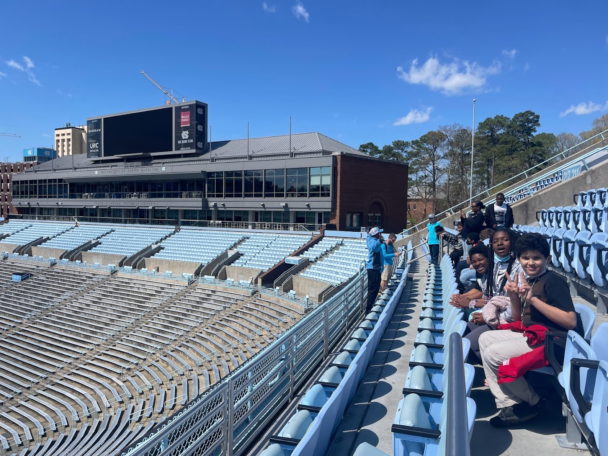
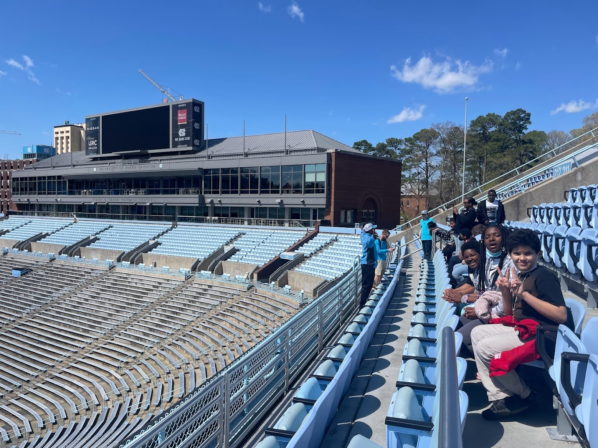

Title I Schools
 

About
We are committed to showing students that may not have access to information about higher education, this knowledge. Title 1 5th-8th grade schools within a 1 hour radius of Chapel Hill, NC are welcome to apply through this google form during the application window (November 1st- December 15th). Schools will be notified by Janurary 15th if they have been accepted and with their tour date. Tours are available (March 1st-April 15th). Find out more information about what a STEP @ UNC day looks like on this website.
Itinerary
- Students will be greeted at the drop off location by UNC students. We start the day off with a faculty speaker. He/ she presents information on how to access higher education and provides a Q&A.
- Next, our amazing UNC students from all walks of life take your students on a campus tour. Highlights include: Library, The quad, Makerspace, and The Football Stadium.
- After all that walking, students are treated to an all you can eat meal at Rams dining hall. Here we have options for everyone, including pizza, burgers, pasta, and dessert. Chaperones receive a free meal as well.
- Before your departure, students head down to the basketball museum and pass the Dean Dome on the way. Here, we watch a short film about Carolina’s history and explore their memorabilia through trophies and replicas.
Apply Here